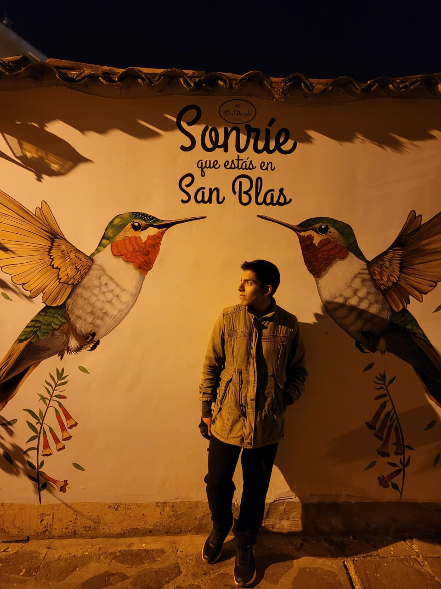
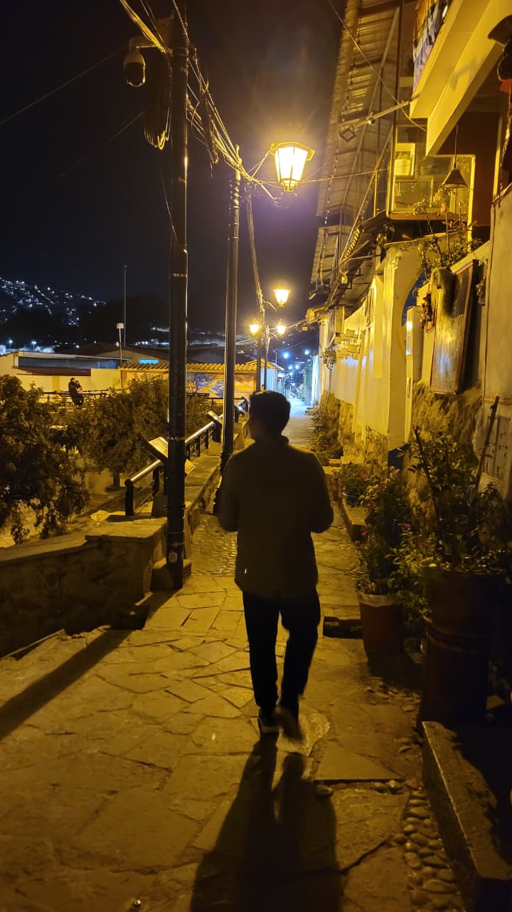

Python
Análisis de datos y automatización
Intermedio
La curiosidad me mueve.
La tecnología me permite crear.
Estudiante de la UNCP. Conecto el desarrollo de software, los datos y las ganas de aprender para convertir ideas en soluciones útiles.


Soy Zair Ken Rojas Cerron, estudiante de Ingeniería de Sistemas en la Universidad Nacional del Centro del Perú.
Me interesa entender cómo funcionan las cosas y cómo hacerlas mejor. Mi formación combina análisis de datos, desarrollo de software y automatización de información.
Me identifico con el pensamiento analítico, la empatía y el trabajo en equipo. Busco seguir creciendo en proyectos donde la tecnología resuelva necesidades reales.
Datos, desarrollo y colaboración.
Distintas herramientas, una misma curiosidad.
Análisis de datos y automatización
Consultas y bases de datos
Modelado y control de información
Indicadores y tableros interactivos
Análisis y organización de información
Usuarios, roles y arquitectura MVC
Automatización de información
Herramientas de colaboración
Escala orientativa: formación · básico · intermedio · avanzado. Las barras representan categorías, no porcentajes de dominio.
Organización ágil, documentación y colaboración en equipo.
Experiencias donde conecté lo aprendido
con problemas de nuestro entorno.
Sistema de rastreo GPS de vehículos de residuos sólidos
Módulos de análisis de rutas y tableros de indicadores para apoyar el monitoreo de procesos operativos de la Municipalidad de Chilca.
Desarrollé módulos de análisis y control de datos de rutas, implementé tableros de Power BI y participé en la documentación técnica aplicando Scrum.
Qhichwa-Band · Brazalete traductor inteligente de quechua
Proyecto de innovación de la UNCP con inteligencia artificial aplicada a la traducción de voz y al intercambio de información.
Contribuí al diseño de la base de datos, la estandarización del flujo de información y la redacción técnica para la presentación ante comités académicos.
Una formación que conecta la universidad
con la práctica y el aprendizaje continuo.
Santander Open Academy
Curso sobre análisis de datos y visualización de información con Power BI, enfocado en la creación de dashboards interactivos.
SCRUMstudy
Certificación internacional que acredita conocimientos en metodología ágil Scrum, roles, eventos y artefactos.
Udemy
Curso práctico de desarrollo web con PHP y patrón MVC, centrado en la creación de sistemas de autenticación y roles de usuario.
Cisco Networking Academy
Análisis de amenazas digitales, gestión de incidentes y seguridad en entornos empresariales.
Cisco Networking Academy
Principios del análisis de datos, roles en ciencia de datos y aplicaciones en negocios e industria.
Cisco Networking Academy
Conceptos clave de ciberseguridad, amenazas comunes y buenas prácticas de protección digital.
Cisco Networking Academy
Cisco Networking Academy
Cisco Networking Academy
Cisco Networking Academy
Cisco Networking Academy
Cisco Networking Academy
Cisco Networking Academy
Udemy
Udemy
Universidad Nacional del Centro del Perú
Universidad Nacional del Centro del Perú
Universidad Nacional del Centro del Perú
Universidad Nacional del Centro del Perú
Scale Incubadora de Impacto / Universidad Nacional del Centro del Perú
Universidad Nacional del Centro del Perú
Universidad Nacional del Centro del Perú
Mi recorrido en Desarrollo de Aplicaciones Web: un espacio para documentar lo que aprendo, lo que practico y lo que descubro.
Abrir mi cuadernoMe interesa colaborar, aprender de otras personas y aportar en proyectos de desarrollo y análisis de datos.
a3278811@gmail.com